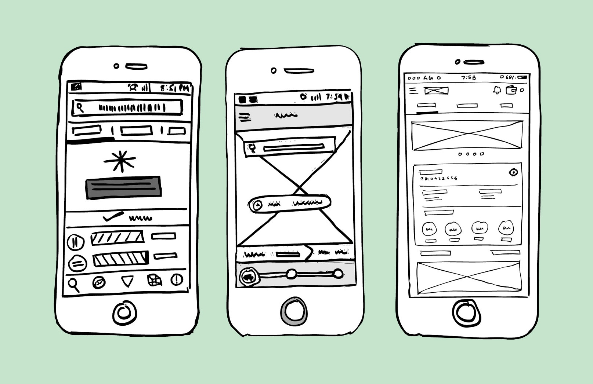
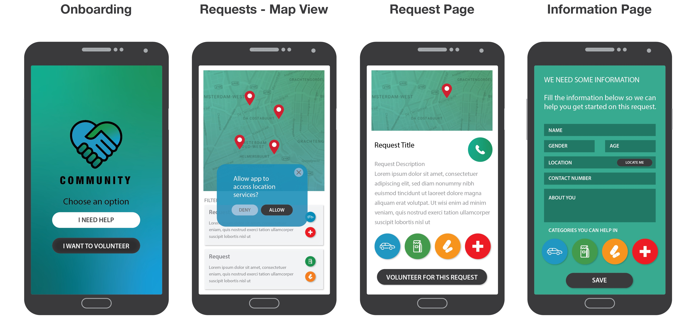

Design is a plan or drawing produced to show the look and function or workings of a
building, garment, or other object before it is built or made (Lexico, n.d.). A design is a
format or plan on how we wish things to be when developed and deployed. It is
basically the outline or the blueprint of the features and attributes that will be added on
a project. It comprises of how these attributes correlate with one another; what will it
look like when these things are put together; and the basic backbone of every project
as a production plan on how things will work out.
What is User Design?
User design is the process design teams use to create products that provide meaningful
and relevant experiences to users. This involves the design of the entire process of
acquiring and integrating the product, including aspects of branding, design, usability,
and function (Interaction Design Foundation, n.d.). The user design is the blueprint of a
program’s usability feature. This is the plan on what features are added on a project
that are for the use and accessibility of a user. It is anticipating what users might need
to do on a specific subject or element making sure that the interface is easy to access,
use, and understand (Usability.gov, n.d.).
What is the difference between User Experience Design and User Interface Design? Why does it matter?
User experience (UX) design is the interaction and experience users have with a
company’s products and services while the User interface (UI) design is the specific asset
users interact with. Both elements are crucial to a product and work closely together.
But despite their professional relationship, the roles themselves are quite different
referring to their aspects on the product development process and the design discipline
(Obi, 2018). These two subjects matter mainly because these two terms are often used
interchangeably. It’s important to know its differences because it supports the
program’s user-friendly environment. Without these two, any programs developed are
not mainly interactive and could potentially lost its meaning. It is important to offer and
open sites and programs with accessible, easy-to-use, and interactive interface for the
users to use, because it is mainly the objective and it comprises the overall user
satisfaction and purpose.
Who are the users? Why are they important?
The users are the people who utilizes a computer or network service (Wikipedia, 2020).
The users are mainly everyone who would register an account in a program or site and
identified by the system as a unique user or account. Users perform vital roles in a
development of a program or site because these programs are created primarily for
their usage. It is for them, the users, why we develop solutions to modern problems and
create user-friendly applications for their convenience and own objectives. Also, users
are important when gathering feedbacks for developed programs to further improve
on what’s needed to be improved and to be able to maintain and create new contents
as we constantly change and develop towards the technological-modern world and
solving more related problems along the way.
References:
Interaction Design Foundation. (n.d.). What is User Experience (UX) Design. Retrieved from Interaction
Design Foundation: https://www.interaction-design.org/literature/topics/ux-design
Lexico. (n.d.). Definition of Design by Oxford Dictionary. Retrieved from Lexico:
https://www.lexico.com/definition/design
Obi, C. (2018, October 15). UI vs. UX: What's the difference between user interface and user experience?
Retrieved from UserTesting: https://www.usertesting.com/blog/ui-vs-ux
Usability.gov. (n.d.). User Experience Basics. Retrieved from Usability.gov:
https://www.usability.gov/what-and-why/user-experience.html
Wikipedia. (2020, September 3). User (computing). Retrieved from Wikipedia:
https://en.wikipedia.org/wiki/User_(computing)
02
What is Design Thinking?
Design is a visual representation of a plan to show how certain elements of a whole work together to
create and develop a center idea of a building, an object, or a system. But what makes up a design?
How do people come up with a design of something? Where did this underlying visual representation idea
sprung up and how is it made exactly? Just like what every little thing we see in our daily lives that
we find useful, design is a product of an idea that comes from our mind—our thinking, processing,
working little minds.
Have you ever imagined that an idea of yours be implemented and developed right before your eyes working
and functioning properly like how you pictured it? That’s what design thinking is all about. Design
thinking refers to the cognitive, strategic and practical processes by which design concepts (proposals
for new products, buildings, machines, etc.) are developed (Wikipedia, 2020). Design thinking revolves
around a process of understanding the needs of the users to create ideas and designs of a product as a
solution-based approach to solving problems. When we first hear the word “design”, the first thing that
would come to our mind is that the word is related to arts, graphics, colors, layouts, and other
visual-appealing ‘aesthetic’ sectors. However, design thinking is not an exclusive property of
designers—all great innovators in literature, art, music, science, engineering, and business have
practiced it. This design thinking process allows and helps designers or people from any other sectors
to extract, teach, learn and apply this technique to solve problems in a creative and innovative way –
in our designs, in our businesses, in our countries, in our lives (Dam & Yu Siang, 2020). To put it in a
school-related, scientific-related, and/or project-related setting, we can compare design thinking as the
well-known, scientific method. Design Thinking is extremely useful in tackling problems that are
ill-defined or unknown, by re-framing the problem in human-centric ways, creating many ideas in
brainstorming sessions, and adopting a hands-on approach in prototyping and testing (Dam & Yu Siang, 2020).
Design thinking revolves around connecting with people. It has a deep interest of observing and
developing empathy with the target users and understanding their problems to create innovative
solutions. In this way, we are generating and gathering data of what’s the problem all about to be
utilized to create an innovative solution at the end. After gathering enough information, it is time to
focus on one general idea of the problems and think of a vague solution or conclusion out of it. Design
thinking requires research of a certain aspect of a problem to better understand the situation and be able to generate the
appropriate ideas. This process now involves the educated guess of the scientific method of which we
call the ‘hypothesis’ of a problem. After thinking up of an assumption, it is time to put in a test or an
experiment. Design thinking now works on testing out and trying out experiments of all the possibilities
for a solution. If one procedure does not work, try experimenting on the second solution. If the second
solution did not work, proceed with another one. This procedure will just keep running and repeating until
one result of an idea works. Next is to analyze the data and draw conclusions for a design of something.
The next thing design thinking would do is to apply these solutions to real-life modifications and be able
to provide a creative and innovative solution. To dive more deeper about design thinking and how it works,
a model containing 5 stages was proposed by the Hasso-Plattner Institute of Design at Stanford (d.school).
The five stages of Designing Thinking are Empathize, Define, Ideate, Prototype, and Test.
1) Empathize
The first stage of the Design Thinking process is to gain an empathic understanding of the problem you
are trying to solve. This involves consulting experts to find out more about the area of concern through
observing, engaging, and empathizing with people to understand their experiences and motivations, as well
as immersing yourself in the physical environment so you can gain a deeper personal understanding of the
issues involved (Dam & Yu Siang, 2020). This first stage conducts researches to develop an understanding
of the users.
2) Define
In this step, we combine and analyze the research to draw insights from the data that will help define
our problem statement (Voltage Control, 2019). This step involves around weighing out the data gathered
to identify and define the problems that came from potential users. It is about connecting the relationship
of the data gathered and the research to observe where the user’s problems exists.
3) Ideate
During the third stage of the Design Thinking process, designers are ready to start generating ideas. You’ve
grown to understand your users and their needs in the Empathize stage, and you’ve analyzed and synthesized
your observations in the Define stage and ended up with a human-centered problem statement (Dam & Yu Siang, 2020).
It is the part where the team and the team members “thinks outside the box” to explore possible solutions
— generating a range of crazy, creative, and innovative ideas.
4) Prototype
Prototyping allows you to get ideas into physical form to gain feedback from the people they are intended to serve.
The goal is to start with a low fidelity version of the intended solution and improve it over time based on
feedback (Voltage Control, 2019). This stage now involves a copy or an earlier version of a product to see
what it would actually look like when it’s finalized and deployed. This is a big help of understanding the
user’s interactivity with the solution to further improve and develop the solution for mastering its
potential cause. It is to build real, tactile representations for a range of the ideas.
5) Test
Designers or evaluators rigorously test the complete product using the best solutions identified during
the prototyping phase. This is the final stage of the 5 stage-model, but in an iterative process, the
results generated during the testing phase are often used to redefine one or more problems and inform the
understanding of the users, the conditions of use, how people think, behave, and feel, and to empathize (Dam & Yu Siang, 2020).
This stage requires the team to return to their users for feedbacks and work on with it to improve what’s
needed to be improved on.
Design thinking is a process of creating new ideas: working to create innovative solutions that would work with people even if we don’t know
what the answer is when we start. It is a process of learning something unexpected, exploring lots of problems, and working on solutions not
knowing what works out. Design thinking is exposed to failure, but it is an opportunity to learn through experiments. One just must be optimistic,
to be believe that it’s possible to create big creative and innovative solutions for bigger problems.
References:
Dam, R. F., & Teo, Y. S. (2020, August). 5 Stages in the Design Thinking Process. Retrieved from Interaction Design
Foundation: https://www.interaction-design.org/literature/article/5-stages-in-the-design-thinking-process
Dam, R. F., & Yu Siang, T. (2020, July). What is Design Thinking and Why Is It So Popular? Retrieved from Interaction Design
Foundation: https://www.interaction-design.org/literature/article/what-is-design-thinking-and-why-is-it-so-popular
Voltage Control. (2019, June 13). 5 Steps of the Design Thinking Process: A Step-by-Step Guide. Retrieved from Voltage Control:
https://voltagecontrol.com/blog/5-steps-of-the-design-thinking-process-a-step-by-step-guide/
Wikipedia. (2020, September 3). Design Thinking. Retrieved from Wikipedia: https://en.wikipedia.org/wiki/Design_thinking
03
What is Prototyping?
Prototyping is an experimental process where design teams implement ideas into tangible forms from paper to digital
(Interaction Design Foundation, n.d.). Prototyping is the 4th phase of design thinking and it is an essential part of
user experience (UX) design for it provides the user a visualization of what the app would eventually look after the
development. Developers build prototypes using different degrees of fidelity to be able to capture and interpret the
design concepts of the application in-progress. Having a prototype is having a solid foundation of how well the app
matches what the users want. Prototypes could be a simple experimental model or design draft of an app which could be
written in a paper or in digital form from which to work on improvements based on the feedback of users that tested the
prototypes.
What is the difference between low-fidelity and high-fidelity prototypes?
Low-fidelity prototypes are often paper-based and do not allow user interactions. On the other hand, high-fidelity prototypes are
computer-based, and usually allows realistic (mouse-keyboard) user interactions (Usability.gov, n.d.). Low-fidelity prototypes
are sketches of an early visualization of what an application would look like. They are easy to create, and it is more easy
to suggest and explore changes for improvements. High-fidelity prototypes is the closest possible true representation of an
application’s user interface. This is much realistic than low-fidelity for it somehow gives the actual vibe of the application
when developed. On a side note, high-fidelity prototypes are more often open to collecting true human performance and feedback.
Give examples of low-fidelity and high-fidelity prototypes.

Low-fidelity Prototype (Sketch-based)

High-fidelity Prototype (Computer-based)
Why is prototyping important?
Prototyping is important because it gives the researchers and developers a chance to visualize what their proposed product will look
like even in an early stage. They can also utilize and maximize the use of prototypes for other users to test and check the
user interactive (UX) design. Prototyping allows you to get ideas into physical form to gain feedback from the people they
are intended to serve (Voltage Control , 2019). This would be a big help of understanding how the app matches the needs and
objectives of the research and the feedback coming from the users that used the prototypes would be useful to further improve and
develop the actual physical future application. Prototyping allows a system of trial and error to check the design’s correctness
and discover design errors. Design availability of prototypes of all pages of the site, will give an opportunity to better design
the style of the future site. It gives the developers an opportunity to do more realistic planning of development that enhances the
quality and usability of the application (Mishra, 2019).
References:
Interaction Design Foundation. (n.d.). What is Prototyping? Retrieved from Interaction Design Foundation:
https://www.interaction-design.org/literature/topics/prototyping
Mishra, S. (2019, March 18). The Importance of Prototyping in Designing. Retrieved from UX Collective:
https://uxdesign.cc/importance-of-prototyping-in-designing-7287c7035a0d
Usability.gov. (n.d.). Prototyping. Retrieved from Usability.gov:
https://www.usability.gov/how-to-and-tools/methods/prototyping.html
Voltage Control . (2019, June 13). 5 Steps of the Design Thinking Process: A Step-by-Step Guide. Retrieved from Voltage Control :
https://voltagecontrol.com/blog/5-steps-of-the-design-thinking-process-a-step-by-step-guide/